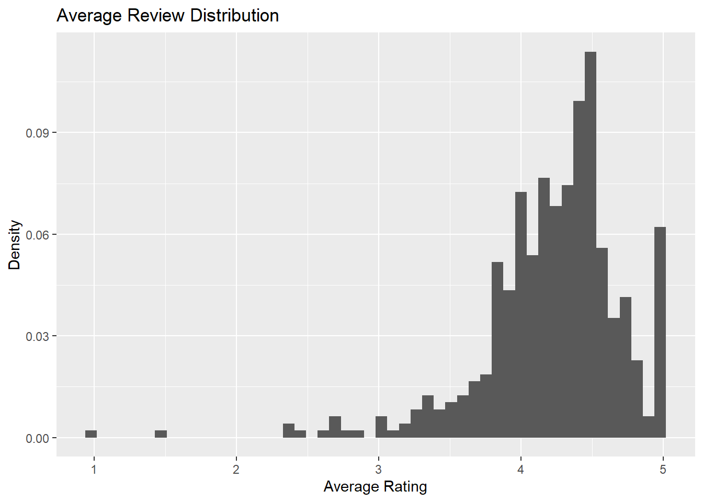
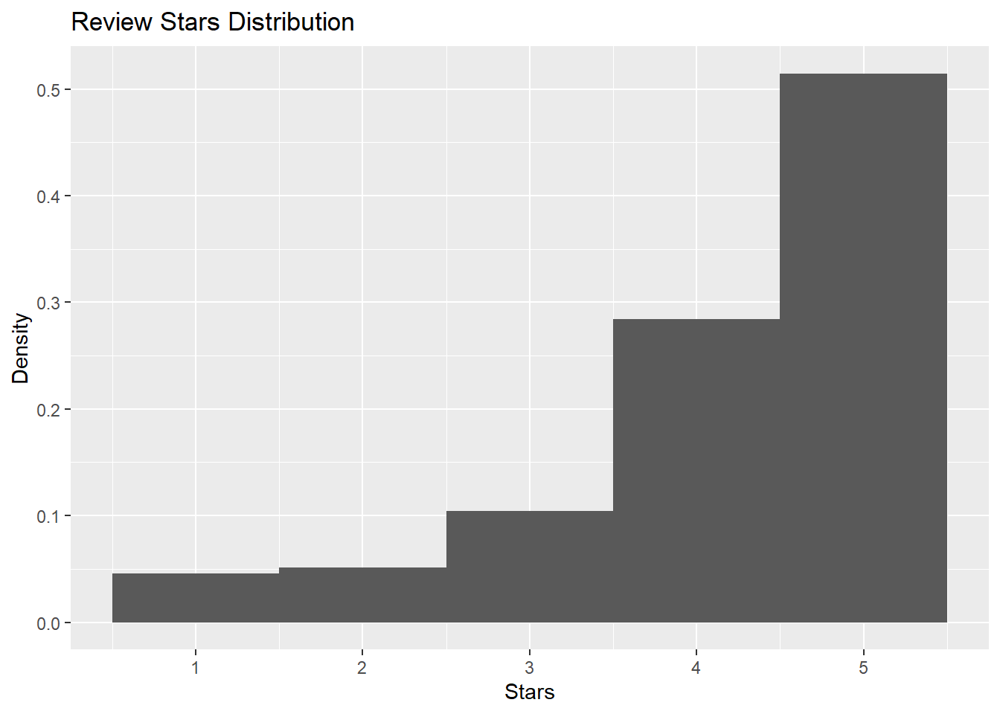
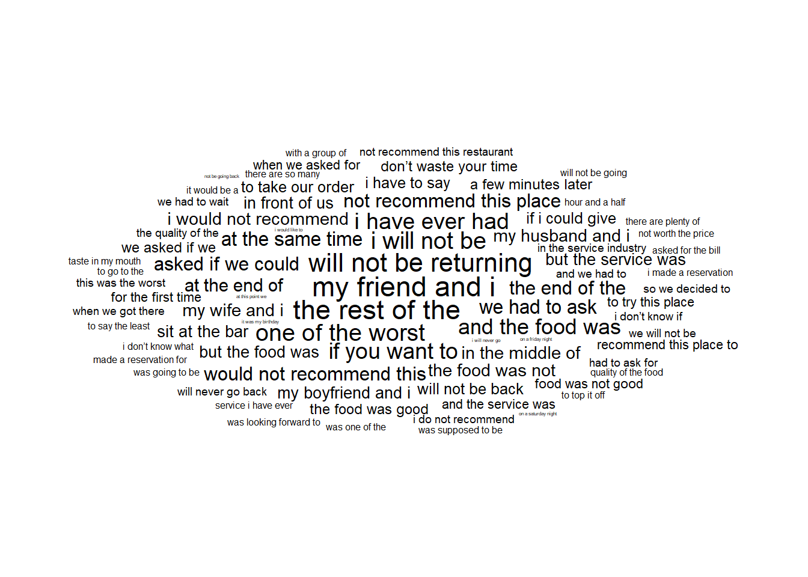
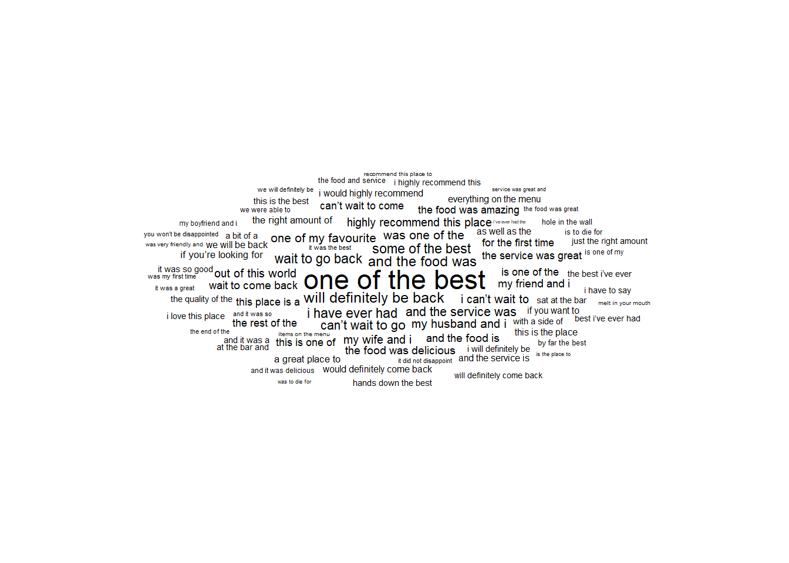
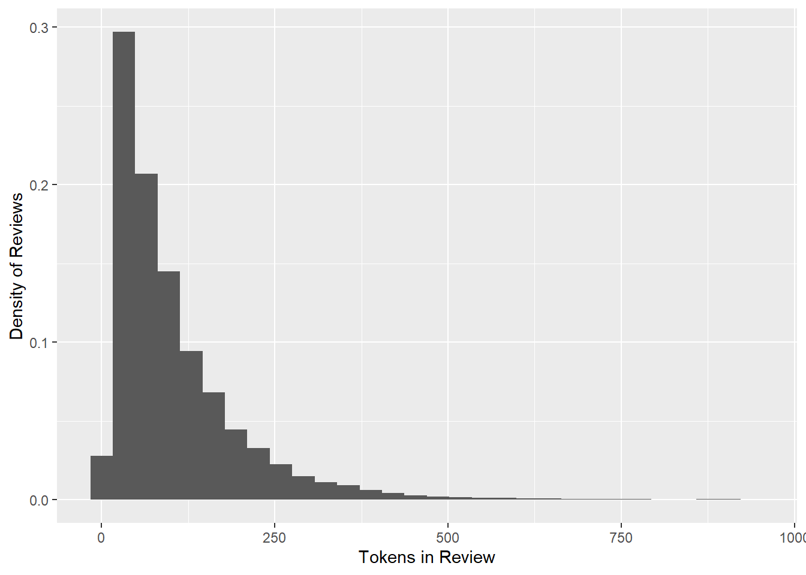
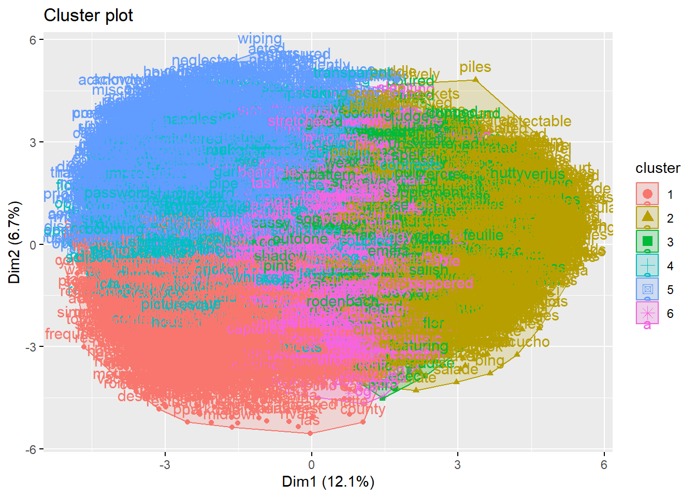
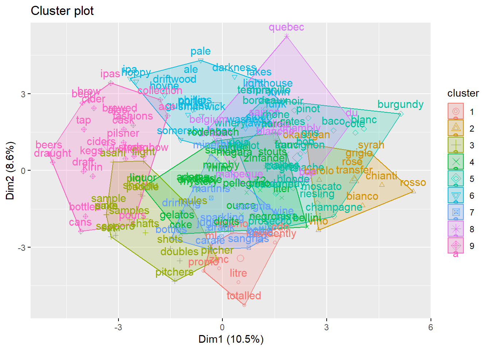

Text Analytics
Restaurant Review Analytics
Summary of Results
The goal of this project is to predict Yelp review scores between one to five stars based on the text contained in each review. By developing a model that predicts review stars based on the text in a review, reviews which surprise the model, due to containing more complex information, can readily be identified. To accomplish this, we scraped 47000+ reviews from Yelp for top restaurants in three Canadian cities. Our final model uses a classification machine learning model trained with the Brulee MLP engine to predict review scores and successfully predicts a review star rating approximately 59% of the time. We found 5-star reviews which were mis-classified by our model typically contain complaints or pain points from customers that they felt didn’t warrant providing a lower than 5-star rating. Because of this, management can find negative critical feedback in 5-star reviews that would otherwise be lost if filtering data to 4-star reviews or lower.
Our final model workflow works in 3 major steps. First, data is cleaned into a vectorizable format. This involves cleaning common errors, adding valence shifter tagging to certain phrases, and removing remaining stop words. Secondly, our words are run through the Word2Vec package into 50-dimensional space. Finally, for each review, the word vectors for all words in the review are added together, before being fed to the model training and testing workflow. This paper will explore some steps taken in reaching this final method, as well as some of our key findings from exploring which resulted from our exploration.
Introduction
After processing 47000+ reviews and approaching our data from multiple angles, one of the hardest parts of this project was trying to explain exactly what it was we were doing and why we were doing it. We first wanted to solve a problem in the restaurant business by identifying consumer patterns. This required sourcing adequate information so we could learn more about the industry, so that our solutions would be meaningfully connected to the market we wanted to improve. We chose Yelp.ca due to the high volume of consumer information on the prospect of pulling consumer insights.
With forty-seven thousand individual reviews from Yelp to interpret, each containing a uniquely written excerpt about the individual’s experience and their thoughts, we realized very quickly we had a problem. Some reviews were very generic and non-informative. Examples include, “The food was great and I had a good time”, or “I really liked the place”. Reviews like this contain very little contextual information which doesn’t provide much more insights beyond simply looking at the star rating given, and doesn’t provide any unique information which broadens the picture. Other reviews offered complex stories about someone’s experience. Each review varied in word choice, token length, and subject focus. We realized narrowing the problem scope would be crucial if we were to succeed in disseminating complex and unstructured data points from each other.
Another realization that helped us frame the problem was that in a theoretical case, two reviews could contain the exact same text. They are written the same way, word for word, and thus convey the same meaning. The difference is, that one review was written by one person, and one review was written by another, and as a result, each review is given different stars even though they contain the exact same text. These previously discussed difficulties provide the pretext for our solution. If we could build a model that predicts a star rating based on text content, it would accomplish two things for us. It can help us normalize review scores to the reference point of an impartial reader (as opposed to the wide variety of scores different writers provide for what they write), and it can also help us identify the reviews that contain more interesting and useful information, such as when someone complains about some aspect of the restaurant but gives it 5 stars anyways. Our goal is to predict a reviews star score entirely from its text content, with these end use cases in mind.
Scraping
Talking about scraping is more of a house cleaning item. For those wishing to try the web scraping features embedded in this document, the information below is important for understanding the scraping workflow. If only concerned with the resulting analysis, feel free to skip to the TLDR below.
Due to the high time requirements of scraping, an .rds file is saved at each stage of the process, per city. This mitigates the damage of potential connection interrupts or time outs, with the consequence of cluttering the local directory. Because of this, it is highly recommended this document is run from its own directory if exploring the web scraping functionality. Finally, fully processed data is merged and cached as master_df.rds, allowing the report to be run from a fixed point. With that in mind, web scraping can be enabled by setting run_scraping to TRUE. A single city takes approximately 5-6 hours to scrape, and a VPN is required to complete it successfully. Query rates are throttled to 6-10 seconds between queries to prevent spamming web requests.
To scrape Yelp, three iterative processes are required. Firstly, we access all listed restaurants for a particular city query, up to a maximum of 240. From here, we visit each restaurant page to pull general information such as attributes, hours, address, and the restaurant’s website. Finally, we visit every review page under the restaurant page, to gather all reviews. This provides us with a very wide variety of information on each restaurant and each review. We catalog each reviewer’s personal page html link, allowing us to keep track of reviewer histories without recording personal information. We collect information on popular menu items, pictures posted, and most importantly, the review text and review stars. We took the approach of getting more than we thought we needed on the first pass, to allow greater ease of pivoting to new problems later if required. The raw web-scraped data is stored in the data data frame.
TLDR; Web scraping occurs in three layers. Find restaurants by city, find features by restaurant, and find reviews by restaurant. Due to how long it takes to web scrape a whole city successfully, multiple cache files were used to save progress at different steps in the process.
Exploratory Data Analysis
With 47691 individual reviews, exploring our data and understanding it more is critical in helping us build a successful predictive model. We want to build a deeper understanding of what makes a review rated high or low. Let’s first take a look at restaurant review scores on average.
Review Stars
We can see that most restaurants have a 4-star rating or above on average, with ratings less than 3 stars being exceedingly rare. We expect 5 star reviews to have the highest frequency of occurrences overall. This graph also gives some evidence of survivorship bias. The reason there are less lower star rated restaurants may be that they fail due to lower popularity, causing them to be de-listed and removed from the data pool. There’s also a tendency for people to want to feel good about the money they’ve spent, requiring more pain points overall for them to admit their experience wasn’t satisfactory. Let’s take a look at individual review score frequency next:

This graph is deceptively simple but is an important consideration for building a predictive model. What we want to do is make a model that can dynamically predict a review score based on its text content. One key feature is that 5-star reviews occur just over half of the time. This is important to consider since a naive approach that predicts a 5-star review every time will be right just over half of the time. We want our model to be able to divert its decision away from a 5-star prediction intelligently, if enough information is present to justify the diversion. For our model to be successful, we need it to predict 1-4 star reviews correctly, more often than it classifies 5-star reviews incorrectly. If it can do this, its accuracy will exceed 50%.
Review Text
The next part of our data exploration focuses on analyzing word content. This helps prepare us for converting our unstructured text data into a structured format that can integrate with a predictive model.
1 Star Reviews:

5 Star Reviews:

We see some phrases which could prove useful in determining whether a review is 1 star or not. Phrases such as “will not be returning” and “speak to the manager” indicate a strong negative tone which is unlikely to appear in a 5-star review. If we were to map the phrases on a number line, 1-star phrases like “I would not recommend” should appear on the very left of the line and 5-star phrases such as “one of the best” should appear on the far right. We will take this idea of putting words on a number line much farther later, but for now, take note of the idea that we can map words or phrases along a line when comparing them to one another. In this case, we might consider what words are associated with when a restaurant is the “best” versus when it is the “worst”.
Natural Language Processing
Now that we know what we are dealing with, it’s time to clean up our text to make it more model-ready. We remove common patterns and mistakes from the text. A very common one is for people to miss a space after the period between words. For example: word.word as opposed to the corrected word. word… The space is critical for our parser to recognize two words are present instead of one. We also replace the restaurant name (i.e., Montanas, Joeys) with the compound word “restuarantname”. This ensures that when people talk about the name of the restaurant in different places, the model treats it in the same way. Finally, numbers often appear in reviews in a multitude of different and difficult-to-differentiate contexts, such as the time of arrival, the amount of time something took, the size of a drink, the number of items ordered, the year, and a street address. Since we want to treat these in a similar format, even for different numbers, first we replace times with generics such as the word timecode, and the remaining numbers we replace with bins such as “numthousands” and “numhundreds”. This allows numbers that are slightly different but used in the same context to be identifiable (i.e. 18.00 and 15.00 as prices under 20 dollars). To summarize, we replace similar cases with generic “made up” words, so our future processing can treat them all the same. After accounting for these, we remove stop words, since they carry less semantic meaning overall, and removing them can bring more clarity going into future NLP processing. We can see our token word distribution after processing below:

Word2Vec
Referring back to the idea of putting words on a number line, for whether they are typical of 5-star reviews or 1-star reviews, word2vec uses an unsupervised machine learning process to map words onto 50 different number lines. The idea is that each number line considers a different contextual feature it can map a word on, but the algorithm doesn’t know what that feature specifically is our what it means. For example, a person could map the word “bread” and “apple” on a number line representing sweetness, by placing them on separate sides. Word2vec could accomplish something similar, however it won’t be able to identify what that number line represents. At its heart, word2vec takes adjacent words and tries to predict the next word using the first word. It then evaluates its success and adjusts accordingly. The weights of the different arms of the network, once trained, become the vector coordinates of each word. What we get as a result is all our keywords mapped into 50-dimensional coordinate space.
An essential feature of word2vec vectorization is it allows words to be added or subtracted from one another. A famous example of this is when word2vec vectorizes the vocabulary of Wikipedia, you can take the coordinates for the word king, subtract man, and add woman, and the closest vector coordinate would be the word queen. The idea is that the semantic features are captured in the vector coordinate space.
We run word2vec on our processed data using the skip-gram method as opposed to the continuous bag of words method. The reason for this is the skip-gram method typically performs better when attempting to contextualize a word that only appears once or twice in the entire corpus. It’s able to recognize when the surrounding context is applicable to multiple different words which themselves appear infrequently in contexts that occur often (Van Gils, n.d.).
We can now choose any word we know is plotted in the vector space and find all words which are closest neighbors to it. As we can see, semantically similar words group together, such as “chicken” and “wings”…
| Query | Match |
|---|---|
| chicken | wings |
| chicken | thighs |
| chicken | jerk |
| chicken | drumsticks |
| chicken | sisig |
| service | services |
| service | excruciatingly |
| service | excelent |
| service | staffs |
| service | cordial |
This provides us with a framework that is almost ready to be used as a model input. The final step is to add together all the word vectors for each review. This provides a cumulative score of axis features. In some dimensions, words will cancel out against each other, netting towards zero. In other cases, the compounding effect of each word will make certain dimensions of the vector space more pronounced.
Modeling:
Linear Model
For our first model, we used a linear regression model. We use all 50 dimensions of the word vector space as our model input. Our initial expectations are that regression will be too simple to account for complex relationships which could appear in language. We run it anyway since it is a popular model type with which we can benchmark our improvements against.
| R_Squared | Adj_R_Squared | Sigma | P_Value |
|---|---|---|---|
| 0.3074056 | 0.3064949 | 0.9149596 | 0 |
| Stars_of_Test_Data | Average_Model_Prediction | SD_of_Predictions |
|---|---|---|
| 1 | 3.208859 | 0.9782411 |
| 2 | 3.505803 | 0.6797076 |
| 3 | 3.739732 | 0.6187943 |
| 4 | 4.188114 | 0.4644710 |
| 5 | 4.407914 | 0.3877557 |
We notice two things right away. Our r-squared is low, at around 30%. This means although it can beat a simple average by 30%, it’s likely not capturing the complex behavior we want it to. Secondly, when fed a subset of the data containing only one rating level (1-star, 2-star etc.), our model tends to overshoot. This reflects the fact that this model really can’t dynamically penalize a review which shows more evidence of being a negative review, beyond scaling the effects of the vector scaling coefficients. We at the very least, see higher variance for 1 star reviews, extending the possibility of a slightly lower prediction than 3 stars a little further.
We’re not satisfied with these results. Because approximately 50% of reviews are five-star reviews, we want our model to beat that approximate 50% benchmark. Otherwise, we’re better off predicting every review as a 5-star review, and like they say in The Incredibles, if everyone is super, nobody is. Our model needs to, on occasion, decide to divert away from a 5-star score based on the information presented to it. We know it will take a bit of further work in order for it to do so because the accuracy achievable in the tail of the distribution is lower, and because the weighting to a 5-star evaluation is so high. Beating 50% accuracy would suggest our model can successfully identify non-5-star reviews, better than the loss of potentially misclassifying other 5-star reviews as something else. This is the kind of dynamic decision-making we are after. To accomplish this, we will use the Brulee engine set to a classification model.
Brulee ML Classification Model
| Stars | Population | Successes | Success_Rate |
|---|---|---|---|
| 1 | 436 | 213 | 0.4885321 |
| 2 | 486 | 65 | 0.1337449 |
| 3 | 988 | 179 | 0.1811741 |
| 4 | 2685 | 934 | 0.3478585 |
| 5 | 4925 | 4167 | 0.8460914 |
| Total | 9520 | 5558 | 0.5838235 |
| Stars | Amount_Predicted |
|---|---|
| 1 | 417 |
| 2 | 162 |
| 3 | 601 |
| 4 | 2114 |
| 5 | 6226 |
Once again, we see an overweighting towards the five-star ratings. No surprise there! Our machine learning can boost its performance by putting more emphasis on that segment. Its 87% success rate in the 5-star category (at the time of writing) is in large part due to the stubbornness of the model to shift the classification to any of the other options. However, we also see the model predicted a review score of 1 star 450 times, and predicted 4 stars 2105 times, which demonstrates the model will divert from a naive approach given satisfactory information is provided.. Our 8% improvement on the 50% accuracy naive benchmark demonstrates the ability of our model to identify the negative context in reviews and divert its predictions accordingly when enough evidence is present. For comparison, here is the overall success rate of the linear model when rounded to the nearest star:
| Population | Successes | Success_Rate |
|---|---|---|
| 9520 | 3980 | 0.4180672 |
Other Model Approaches
Two other models were used in our analysis but were found to offer insignificant improvements. The first attempted to cluster 1 to 4 star reviews as a single class. The intuition behind this was that if the tail ends of the review distribution were harder to predict, instead treating them all as a single “bad review” class removes differences in people’s politeness. We applied this to the ML classification model and found accuracy increased to around 72%. But by aggregating the non-binned model results after predictions, such that all 1 through 4-star predictions are categorically the same, the unbinned model still performed better. This is possibly due to the fact that the reduced approach forces the model to treat 4-star reviews the same as one and two-star reviews, even though the features for each class could look very different. Instead, it appears to be better to let the model learn the different unique characteristics of each rating group, and then weighing the model on its ability to classify five and non five star reviews successfully.
Secondly, we expanded our feature set for the classification model to include the minimum and maximum (as well as the sum) of the vector ranges, such that the model input closer resembles a surface in the space as opposed to a single point. This resulted in slightly worse results, likely due to over fitting. This model likely wasn’t generalized enough to accommodate unpredictability in people’s usage of language.
This is a good time to reinforce the idea that across people, we expect inconsistency between the contents of what people write, and how they score the review. The usefulness of what we are doing is to be able to later identify when a review doesn’t meet our predicted expectations, indicating certain semantic context that may deserve more focused attention, such as a recommendation wrapped in a 5-star review, or a customer comparing a restaurant to a less favorable competitor. Because of this, we do not necessarily want perfect 100% accuracy. We want evidence that the model is working as intended; we correctly score the general case and flag down the outlier case.
PCA
Principal Component Analysis is a great tool to consider in a project like this, for one key reason especially; we don’t know what the dimensions of our vector space currently mean. We have 50 dimensions which mean… something. So when we rotate our data to a new coordinate system, we don’t lose much. What we gain is the ability to strip off the most or least influential factors recursively, as opposed to having a random axis with the word2vec space. First, let’s check the range for each axis. Normalization shouldn’t be necessary since word2vec scales already:
The real issue then becomes determining at what stage or level we can apply our principal component analysis to yield the most effective results. One potential approach could be to apply PCA to the initial vector word space. This would re-orientate all words in reviews into principal component space, with the first component accounting for the most variance and the last component accounting for the least.
Importance of first k=7 (out of 50) components:
PC1 PC2 PC3 PC4 PC5 PC6 PC7
Standard deviation 2.4627 1.83687 1.75253 1.60413 1.5034 1.36043 1.33510
Proportion of Variance 0.1213 0.06748 0.06143 0.05146 0.0452 0.03702 0.03565
Cumulative Proportion 0.1213 0.18878 0.25021 0.30168 0.3469 0.38390 0.41955This challenges one of our mental models. We assumed that because word2vec standardizes each feature (dimension in the vector space) it comes up with, when we run a PCA we expected an even spread in terms of variance captured. What this way of thinking fails to account for is that word2vec may be equipped to calculate a vector size too large for the corpus of information fed to it. In the absence of significant features to differentiate by, it splits its results along multiple axes, and likely aggregates them in strange ways. So coming out of this, word based PCA could be a viable approach.
The second approach considered is to run a PCA on the sum of vectors calculated for each review. This allows for the PCA to address patterns in any compound features that emerge. One of the main ideas is that repeated cumulative effects from multiple words can lead to more pronounced features on a particular axis which wouldn’t be observable in the individual word space. Running a PCA afterward by review vector will likely yield different results than running it on the set of word vectors.
Importance of first k=7 (out of 50) components:
PC1 PC2 PC3 PC4 PC5 PC6 PC7
Standard deviation 4.9463 2.3504 1.47725 1.32316 1.15800 1.09658 1.05936
Proportion of Variance 0.4893 0.1105 0.04365 0.03501 0.02682 0.02405 0.02244
Cumulative Proportion 0.4893 0.5998 0.64346 0.67847 0.70529 0.72934 0.75179Bingo! The review sum of word vectors tends more towards a line than the individual components. As we can see, 51% of variance is explained by the first component, followed by 12% in the next component, and then 4% and decreasing. If our ML model wanted to account for this it would need to learn it on its own. Perhaps this will make the information easier to interpret by the model, since principal components isolate interrelationships between different dimensions. If our model has to learn these relationships on its own when using the unrotated data, perhaps rotating our data with PCA will give it an advantage when training and making predictions.
PCA Transformed Classification Model
| Stars | Population | Successes | Success_Rate |
|---|---|---|---|
| 1 | 456 | 230 | 0.5043860 |
| 2 | 478 | 73 | 0.1527197 |
| 3 | 986 | 168 | 0.1703854 |
| 4 | 2642 | 981 | 0.3713096 |
| 5 | 4958 | 4177 | 0.8424768 |
| Total | 9520 | 5629 | 0.5912815 |
| Class_Predicted | Amount_Predicted |
|---|---|
| 1 | 493 |
| 2 | 197 |
| 3 | 419 |
| 4 | 2217 |
| 5 | 6194 |
From our all-stars classification model, we manage to squeeze the tiniest bit more accuracy out of it, which approaches and sometimes exceeds 59% accuracy (at the time of writing). But here’s the next advantage of the PCA analysis. We can also strip components from the model on the basis of their contribution to total variance, which may lead to more generalization and less over-fitting. Let’s try removing the first principal component. The idea here is to determine whether we can determine review score better using only residual information.
PCA Transformed Classification Model, PC01 Removed
| Stars | Population | Successes | Success_Rate |
|---|---|---|---|
| 1 | 442 | 173 | 0.3914027 |
| 2 | 480 | 53 | 0.1104167 |
| 3 | 1029 | 171 | 0.1661808 |
| 4 | 2637 | 675 | 0.2559727 |
| 5 | 4932 | 4406 | 0.8933496 |
| Total | 9520 | 5478 | 0.5754202 |
| Class_Predicted | Amount_Predicted |
|---|---|
| 1 | 398 |
| 2 | 180 |
| 3 | 514 |
| 4 | 1558 |
| 5 | 6870 |
Interestingly enough, we can get rid of the first principal component, but have observed mixed results where it under performs or over performs compared to the baseline model. At this point, we really don’t expect any higher results from our model. Remember, the reason this model is useful to begin with is it provides a way to classify reviews fairly from their text content. Our measures of model accuracy support the idea that our model is either slightly improving or not changing in terms of effectiveness. If we actually achieved 100%, our model wouldn’t be useful for its end purpose, due to the different temperaments of different reviewers. We are getting to a point where we are comfortable our model can highlight key text which is “mislabeled” by the reviewer, which can either write up the rating of the restaurant to a fair level, or perhaps more usefully, identify high-scoring reviews from your more loyal patrons that perhaps have more information about how you (as a restaurant could improve than you think. Note that for this purpose, our best model thus far is the PCA classification 1 through 5 model, which performs on par with our non PCA classification model, and outperforms the 5/Non-5-Star classification model as well.
Misclassified 5-Star Reviews
Let’s use this model to find 5-star reviews that the model didn’t classify correctly:
I came here straight from the ferry for early lunch during a weekday. Service, ambience and food were excellent. I had the linguine con frutti di mare (plentiful seafood pasta) substituted for red sauce instead of original white creamy sauce - food was delicious, even the complimentary bead was awesome. I also enjoyed their local Pilsner beer. They have a wide variety of beer and wine to choose from.Tip: consider WiFi access for tourists. Yes, we are roaming but the speed is excruciatingly slow compared to traditional WiFi. Would be great to enjoy awesome meal while planning for next adventures at the restaurant.Highly recommended.
What a memorable evening! This restaurant came highly recommended, we were not disappointed! I went with my husband & 9 year old daughter. We had 6:15 reservations got seated right away. It’s a beautiful restaurant! We ordered drinks & appetizers- service great!!! While waiting for our dinners, my daughter & I went to the bathroom - they’re 3 individual bathrooms, my daughter wound up getting locked in, the lock was totally jammed. Justin, the manager could not have handled the situation any better, nor could our daughter! He remained focused and had several back up plans - it took at least a 1/2 hr - 45 minutes to get her out, resulting in removing moldings! They thought to hold our food & and made our daughter feel like a rock star!!! The risotto was absolutely incredible! I told Maddie she’d probably get free gelato, they comped our meal! Thank you Justin & your staff for everything!!! Can’t wait to come back next time we’re in Victoria!!!
Not all reviews are correctly misclassified due to a spoken issue. Many occurrences of the phrase “not disappointed” showed up, which makes sense because, after the removal of stop words, it simply shows up as “disappointed”. This provides us with one final angle of attack for improving our model’s accuracy, which we will tackle later in the valence shifters section. However, we do identify some very interesting suggestions from some of the reviewers. The two above appeared as 5-star reviews predicted as lower scores by our model. The first offers an earnest suggestion to improve wifi service but rated the place five stars anyways. The second involves a very theatrical incident where someone’s daughter got locked in the washroom due to the lock jamming. Despite the 5-star review, we can easily see the negative context here. Both of these reviews provide critical feedback to the restaurant, and would be lost by management if they focused solely on 1-3 star reviews to seek areas of improvement. . What’s better, is this is information about present issues coming from patrons who are much more likely to return, increasing the impact of the potential improvements. Each of these examples came from the first 10 mis-classified 5-star reviews on the first run of this model.
Clustering
We wanted to take a little time to explore our word space a bit more before the final section, so any reader can walk away feeling confident of the capabilities of vectorization in a machine learning context. . It’s easy to look at the vector input for the predictive models as nebulous structures that can’t be understood. Exploration through clustering builds a much more intuitive picture of how vector addition leads to suitable predictions. Additionally, it provides a useful means of building dictionaries for various sub-topics enabling restaurant owners to gauge consumer trends.
We will use k-means clustering to group different words into sets. Note the lack of need for normalization due to consistent axis ranges for our vectors. The following 3 graphs show 3 layers of clustering. The first layer of clustering captures large groups and removes larger bands of empty space in the data. The second cluster captures subgroups within the first set of clustering. Because the first round of clustering removed the consideration of empty space between the groups, the sub-clusters don’t have to optimize for other words very far away, since they are allocated to other clusters. This leads to a better fit than simply running many clusters at the macro level. Finally, the sub-clustering is repeated creating a third tier in the hierarchy.
Clustering Tier 1

Clustering Tier 3

Above is one of the most unique clusters we’ve identified. It contains many kinds of drinks, from wines to cocktails we’ve never heard of. The consistency of this subset speaks to vectorization capabilities in capturing word context. This case also justifies our use of skip-gram modeling as opposed to using a continuous bag of words, since even drinks that appear only a few times in reviews still get classified correctly due to similar surrounding context.
Valence Words
Up to this point, we’ve looked at each word independently of one another, without accounting for n-gram token relationships. When we filtered for 5-star reviews mis-classified as lower ratings, we noticed a high prevalence of the phrase “not disappointed”. A quick inspection revealed the issue: “not” is a stop word, so it was dropped immediately. Since it would appear “disappointed” appears in more negative reviews than positive, the lack of adjustment for the word not flipping its meaning caused the problem. ‘Not’ is an example of a valence shifter. It modifies the meaning of a word near to it, in this case, flipping the meaning.
We want to account primarily for the inversional valence shifters. We specifically want the words that invert the meaning of the word they are beside… words such as [not, no, ain’t, wasn’t], etc. One approach considered was to take the vector for the anchor word, and multiply it by negative one before adding it to the review vector sum. This runs into a problem: because word2vec is trained without any of the stop words, the anchor word is displaced by occurring in opposite semantic contexts but being considered the same entity. Instead, we decided to concatenate the word not to any word besides an inversional valence shifter. The phrase:
“This food aint good”
Becomes:
“This food notgood”
Notgood becomes its own word treated separately in the word2vec process. Why do we want this? Consider the following four phrases: “Not Good”, “Not Bad”, “Good”, and “Bad”. All 4 have different meanings. Something which is good is better than something that is not bad. Something which is not good is better than something that is bad. The slight difference in meanings comes from the subtext of each word. Because of that, multiplying vectors by -1 in the presence of an inversional valence shifter would lead to a distortion. Word2vec can now contextualize valence-shifted phrases independently.
We rerun our entire model top to bottom, this time adjusting pre-processing to account for valence shifters with an apostrophe. Vectorization, PCA, and model training remain unchanged:
| Stars | Population | Successes | Success_Rate |
|---|---|---|---|
| 1 | 416 | 241 | 0.5793269 |
| 2 | 500 | 79 | 0.1580000 |
| 3 | 1026 | 262 | 0.2553606 |
| 4 | 2708 | 776 | 0.2865583 |
| 5 | 4870 | 4369 | 0.8971253 |
| Total | 9520 | 5727 | 0.6015756 |
| Class_Predicted | Amount_Predicted |
|---|---|
| 1 | 487 |
| 2 | 181 |
| 3 | 588 |
| 4 | 1714 |
| 5 | 6550 |
Depending on the sampling of the training and test set, results will vary. But we’ve seen this do as well as 59.5% accuracy on multiple occasions, which significantly improves on the typical results of the previous models. Regardless, in some instances the results will be inverted in comparison to our previous models. This also addresses issues found through qualitative means. We now expect five star reviews which use phrases such as “not disappointed” to appear less in our misclassified set, increasing the odds misclassified reviews contain useful critiques for management.
Conclusion
Text analytics on large data sets is no cakewalk, and using that text to make predictions is a lengthy process with uncertain results. It can be done, however, and in this case, the occurrence of an incorrect prediction can be a useful feature if used cleverly. We were successfully able to improve our predictions over our regression model baseline, and prove our model can behave in a non-naive fashion that can recognize non-5-star reviews. We were able to use vectorization and clustering to develop new search dictionaries tailored to the industry of interest and use those dictionaries to track changes in consumer interest. Finally, we were able to explore the merits of various process tunings in an attempt to improve model consistency. Our final model allows managers to identify 5-star reviews with critical feedback quicker that sifting through all 5-star reviews by hand. More examples of misclassified 5-star reviews can be found below in the appendix.
Appendix
Below are examples of 5 star reviews misclassified by the final model. Note the prevalence of complaints, suggestions, and expressions of other pain points in general, whether they are directed at the restaurant or not:
The first 2 our hand picked examples from us. The first notably had a stale dish served, but was promptly replaced. The second takes note of the lack of vegetarian and lighter options:
- Note the use of “disappointment” and “unusual”:
This was a great meal. The salad (insalata mista) we split four ways and was lightly dressed and fresh as could be. The stuffed grilled squid (Calamari Ripiena) were yummy. My wife reports that the Frutti di Mare (her predictable choice whenever and wherever it is offered) was the best she ever had. Their SPAGHETTINI CARBONARA con POLPETTI di VITELLO was a disappointment at first. I think our food got hung up at the pass and I suspect that the Carbonara sat in the under the heat lamp too long and congealed in a big wad. When I pointed this out they immediately whisked it away and brought me a fresh plate all luscious and creamy and bacony and carbonary. The Meatballs, an unusual touch in my experience with a carbonara, were light and flavorful. I was quite gratified. My in law’s selection of Pollo Appolonia (Chicken breast pan-roasted with scallops, prawns, tomatoes,smoked bacon, lemon, cream and fresh basil served on fusilli pasta in a three cheese sauce) was just overwhelming with its goodness). My daughter ordered the Filetto d’Alibut and was speechless for quite sometime while she concentrated on this fresh concoction. Great list of beers and wines.Service was perfect. And the price was really pretty reasonable at about $35 a piece before tipping..
- Note the comments of “vegetarian options” and all menu choices being “heavy”:
Great ambiance, warm service, quality food and a commitment to cocktails that includes zero-proof drinks makes Little Jumbo a standout in Victoria. Little Jumbo manages to be both hip and relaxed. The menu features a mix of seafood and meat (pretty low on the vegetable/vegetarian content, though it appears to change regularly). We had been doing a fair amount of eating the night we visited and skipped the appetizers since they were all fairly heavy (halloumi, polenta fries, oysters etc), and there was no salad to be had. I went for the Calabrese style mussels and clams, spouse went bistro burger. Both entrees were done well, both plates left clean. The dessert menu had three items and spouse surprised me when ordered two when we had trouble deciding between the hummingbird cake (dense, moist and delicious) and peanut butter chocolate bar with gelato (rich and decadent). I loved the creative zero-proof cocktail options, and chose one called Into the Woods, which had pine syrup and a delicious gin and tonic vibe. Our server had great pacing and was generally lovely. Little Jumbo is a haven in the more touristy section of Victoria’s waterfront.
The next 8 are picked based off of the random test sample for this particular render. Not all carry the hallmark of some pain point, however for being entirely 5 star reviews, these features are more prevalent and noticeable:
My partner and I have enjoyed dining here twice and both times the food and service was beyond impressive. I asked for a well done steak and their chef cooked a perfectly well done steak that was incredibly tender. I’ve also enjoyed one of their risotto dishes and it was amazing. The portions are quite large so you will not be left feeling hungry. Both of the servers we had were delightful. The prices are a bit high, however, there are other restaurants in the same city with the same prices that absolutely pale in comparison when it comes to quality and service. If you’re hoping for a delicious, special meal, this is the perfect place!
We really enjoyed Il Terrazzo. The food was high quality and the atmosphere is casual but elegant. It’s a bit hard to find as you have to go into the alley and behind the building of the address to find it, but it’s worth the extra effort. The waiter was excellent at his job and explained everything and was always available when we needed anything or anticipated what we might need. The prices are reasonable for the quality of food, but I would say on the higher end of the scale for this type of place. I had the Frutti Di Mare and my wife had the meatballs with Spaghetti which were both very good. I would recommend this place to my friends and will return if in Victoria in the future.
Chef D and I are believers in the golden rule of food.The locals know where to eat better than the internet does. In the case of NUBO, the locals and the internet agreed.I was personally a little nervous about the idea of Japanese tapas, wondering about the description we had read which was vague. Japanese style tapas. That was really all we could find. There seemed to be a huge menu online to look at and most of it sounded excellent. So, we made a reservation for a late dinner and walked the 10 blocks or so from our hotel to try and find this place.The neighbourhood looked very residential, there was construction and apartment buildings, and seemingly out of place there were two Japanese restaurants side by side. We will talk about the other one another day.My first impression of NUBO was that it reminded me of MOMOFUKU noodle bar in New York. Very long skinny dining area and a seated bar surrounding the chefs who were working in the open. I liked the vibe but it did not marry up with what I had in my mind. I had heard words like “high end” and “fancy” so I was muddled walking in.The hostess sat us at the bar and called something to the staff in Japanese, they all chorused back with a response in Japanese. I was to learn that this was done every time a guest came in. Nice touch frankly. I have scoured the internet to get the translation but I have not been able to find it, suffice to say it was an announcement that the guests had arrived. It was show time.Chef D and I took full advantage of the huge menu, I began with Pickled Daikon , miso soup and edamame. Then took full advantage of the Valakas roll: imitation crab meat, bell pepper, spicy tuna, green onion, balsamic reduction, miso, aioli, deep fried.It does not sound like a ton of food but after that and sampling some of Chef D’s Octopus and Roll, (we had been eating all day) I was very full.My thoughts on NUBO are that I would like to go there more hungry than I was . There is a lot of menu that I would have liked to explore and didn’t get there.NUBO has got it right, they are the perfect blend of Japanese tradition, edgy takes on classic Japanese Cuisine, and an environment that makes you feel welcome no matter what walk of life you hail from. NUBO, I would like to return as quickly as I can , and I just may fast all day before I get there.Cheers and Bon Appétit,Whiskey G10/10 We were greeted by the entire staff upon entering NUBO, and escorted to a couple seats near the end of the bar. I was thirsty, and immediately picked up the cocktail menu. Obviously this place pays attention to detail. The drink menu was large, filled with trendy drinks, most of which had a small Japanese twist to them to make them unique. I’m a big fan of the flavour of Shiso leaves, so Whiskey and I ordered up “shiso mojitos”, and started to peruse the food menu while our drinks were made. The cuisine at NUBO is modern Japanese, with attention payed to the aesthetics of the plates, well conceived colour combinations and negative space are utilized in a thoughtful way. The noticeable restraint in many flourishes shows experience and respect for the cuisine. I ordered up a bowl of wasabi octopus for a starter as I sipped my refreshing drink. It was what you might expect from a bowl of lightly seasoned raw octopus: cold, slimy, a bit chewy. At first I really enjoyed it, the creeping heat from the wasabi played nicely with the cold, fresh seafood and the nori strips it was served with added that right amount of salt, but after a half bowl of it I was fatigued of the chewing and of the flavour. For the rest of my meal I kept to the sushi roll part of the menu. It was definitely the prettiest sushi I have ever had, and easily some of the best tasting too. Ultra-fresh seafood with flawless rice. The highlight for me was the “mango tango” roll. Mango, salmon, cream cheese and avocado. After slowly munching on a couple rolls, I was full, but that wasn’t going to stop me from trying one last thing. I ordered a chef’s choice, which turned out to be a rainbow roll. It was beautiful. It was also big. I had a few pieces and then asked for the remainder to be packed up. Returning back to the hotel, (shout out to Paul’s Motor Inn) I bestowed my leftovers to the awesome and helpful desk attendant who was very enthusiastic about us visiting NUBO and our foodie weekend in general. I think he was genuinely appreciative, as I’m not sure he had left that desk in what very well could have been days.In sum, I think NUBO strikes a great balance of modern and funky with traditional Japanese, it doesn’t seem forced or trendy fo the sake of trendy. It oozes high quality from every facet and the restraint shown in the food and menu shows a wealth of experience and smarts.Cheers and bon appétitD.9/10
Oh my goodness, this place has the best albacore tuna! Bf had the lamb and I had the tuna, and both of us felt the lovely sensation of food melting in our mouths. The olives that came with the lamb were a bit on the very salty side, so bf ended up only having one (and I finished it because I’m such an olive lover mmm). It was a saturday evening so it was a bit loud (two people at different tables were laughing loudly, and I mean obnoxiously loud… don’t know if they knew…) but the place itself is quite cozy and warm.We very much enjoyed the cocktails too: had the pymm my ride and pitsch please (I think?) and both tasted quite fruity and good.Service was what you would expect at a semi-high end casual resto. No complaints;)We went out to get street dessert so didn’t order any at the restaurant but we’ll definitely stop by this place again when we visit Victoria again.Keep up the great food!
We have been enjoying good meals while we are on vacation in the PNW, but this was the best yet, and not overpriced. Finn’s is very popular. We were glad we made a reservation (it is Saturday night). There was a line at the street both when we went in and came out. We had asked for an outside table, so we were seated downstairs and outside in back, with a view of the water. The servers were pleasant and attentive. We tried a couple of their draft beers: a Kolsch (yummy) and something called Dino Sour (ok, but not a fave). We shared the dim sum appetizer, which was six steamed dumplings, half pork and half with whole shrimp inside, plus some Asian slaw. I ordered the prawn (shrimp) tacos, based upon Yelp reviews (they do 2 as an app but you can get 3 for an entree). My husband ordered the seafood linguine. Both of our items were very tasty and well seasoned. The view was great. There is a public parking (pay) lot right next door. Wharf Street is where it is all happening in downtown Victoria, and we were very happy with our choice.
In the Chinatown area, this restaurant came up as one of the highly-rated ones on Yelp. It didn’t disappoint! The food seemed pretty authentic, although their “crossing the bridge” concept was unique for the noodle dishes.I got the seafood “crossing the bridge” one, and it was fun to eat and tasty! It comes with one really hot bowl of broth, a plate of seafood, and a lot of tiny dishes of ingredients to dump into the broth. If you don’t immediately dump your raw ingredients into the broth, the server will make sure you do or do it for you.For dessert, I ordered the grass jelly and sesame balls. Both were somewhat small portions but phenomenal. They were really trying to get to us try their homemade mooncake, but we were too full by then.The service was good where the staff was friendly and quick. You also get free wifi here, which was nice (especially if you don’t have service and traveling from other countries).
Very excellent place to eat! But must warn you, make reservations! This place is ALWAYS packed for good reasons, the food is 5 star! I went with the Stinco D’Agnello Alla Chiantigiana which is basically Lamb Shank. The meat was so tender, it was basically like pulled Pork where it comes off the bone like butter! The pre-dinner bread was also good, not the best though that I’ve had.Went with a nice local beer to drink, I dont remember what it was though. For desert, went with the Panna Cotta, which was Delizioso! Would highly recommend both of the Lamb Shank and hte Panna Cotta.Wife had the Squash soap, not much into soap but she liked it. She also went with the Agnolotti Con Sugo Di Noci and the Cannoli and scarfed those down.Overall, the only knock I would have on this place was its pretty dark, so had to use cell phones to see the menu, but I would HIGHLY recommend this place! But be forwarned, make reservations!
The name Chimac is apparently a portmanteau consisting of Chicken and the Korean word for Beer. After the letdown from Chicken 649, I wasn’t terribly optimistic that I could find good Korean Fried Chicken in this town. But I was wrong - Chimac is awesome! I ordered the chicken with the spicy sweet chili sauce. The chicken was perfectly crisp and the spicy sweet chili sauce provided fantastic flavour and mouthfeel.Chimac serves a limited amount of beers on tap, but they are good ones: Sapporo, Hoyne Pilsner, Hoyne Dark Matter and Steamworks IPA.Service was decently prompt as well, and my chicken order arrived less than five minutes after I ordered. My beer actually arrived after the chicken, because they were having issues with their keg of Hoyne Pilsner.
Reference:
Van Gils, W. (n.d.). NLP with R: Part 2 - Training word embedding models and visualize results. Medium. Retrieved from https://medium.com/cmotions/nlp-with-r-part-2-training-word-embedding-models-and-visualize-results-ae444043e234
Cote, P. FIN 450 Class Notes. Retrieved from https://connect.bus.ualberta.ca/connect/#/apps/28/access
How to Change Legend Title in ggplot2 in R. (Year). GeeksforGeeks. Retrieved from https://www.geeksforgeeks.org/how-to-change-legend-title-in-ggplot2-in-r/
How to Display Only Integer Values on an Axis Using ggplot2. (Year). Stack Overflow. Retrieved from https://stackoverflow.com/questions/15622001/how-to-display-only-integer-values-on-an-axis-using-ggplot2